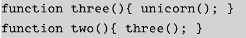
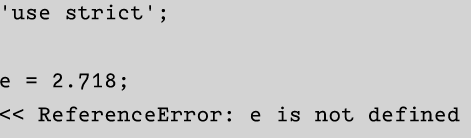
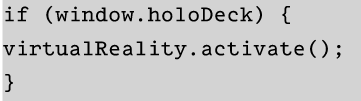

The programmer should design in a way that prevents the user from making the error
They can be found and corrected:
This mode can helps us to improve its clarity and speed.
When a variable is undeclared, using strict mode can help us to get an exception instead of a warning.
This method help us to check whether a method o function exits before trying to call them
Creating break point help us to know where the bug or problem is placed and there are some
The most basic debugging method is using alert() method, because alert() stops the program until the user click on OK button
Equality sign is "==="
Assigning a value to a variable "="